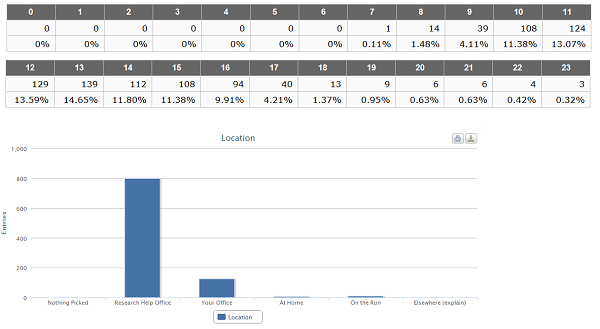

This project used reference transactions from the Galvin Library during the Fall 2013 semester (August 19 — December 7). The data includes the following:
Show that there are few transaction recorded in the evening hours so we can reallocate those hours to where they are most needed.
Our data capture tool — LibAnalytics — only uses standard tables and bar charts, which don't help point out that we are using shift hours ineffectively.
